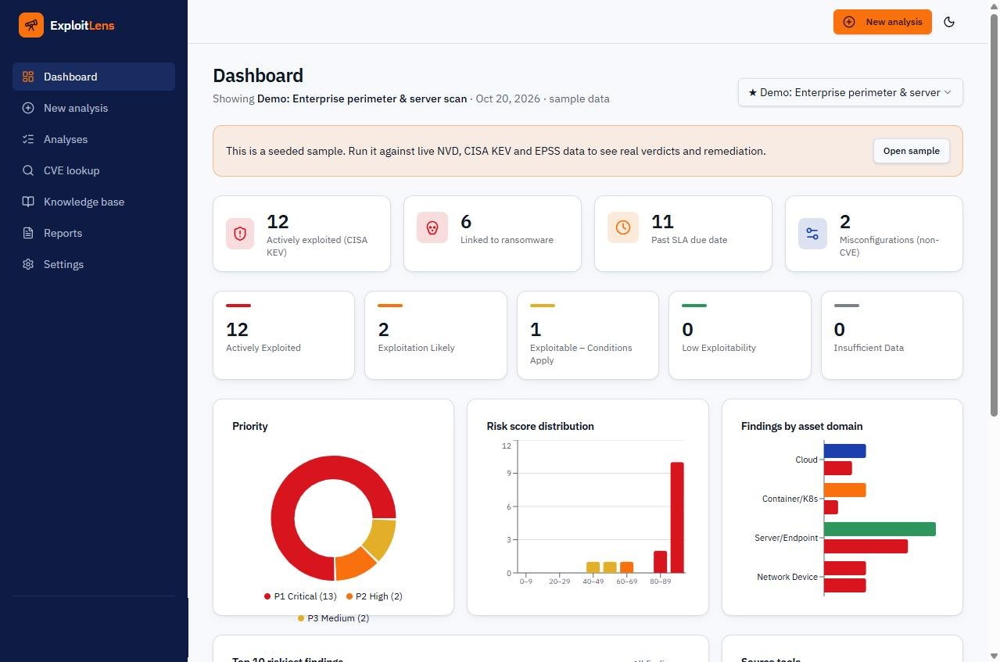
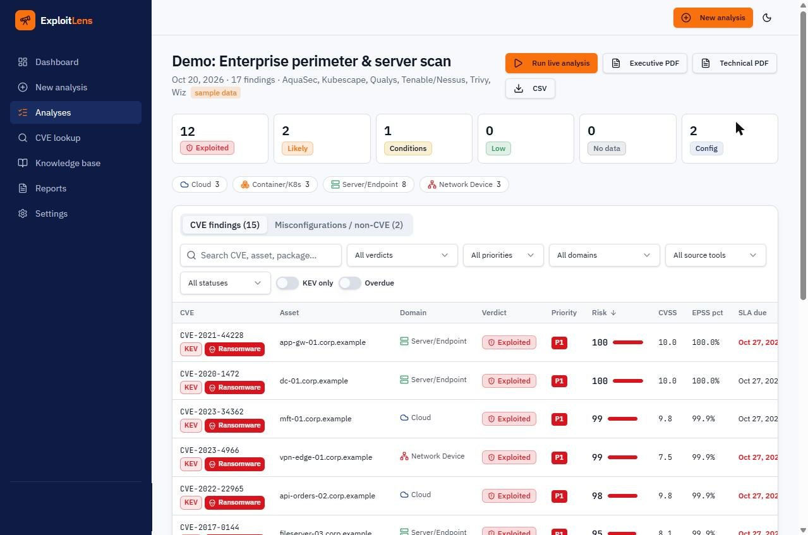
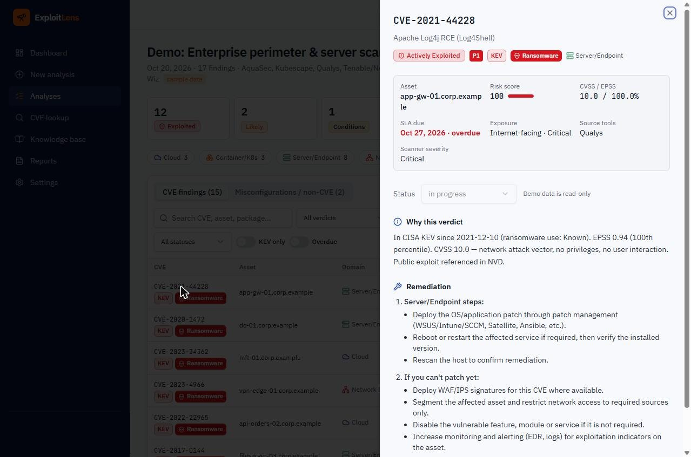
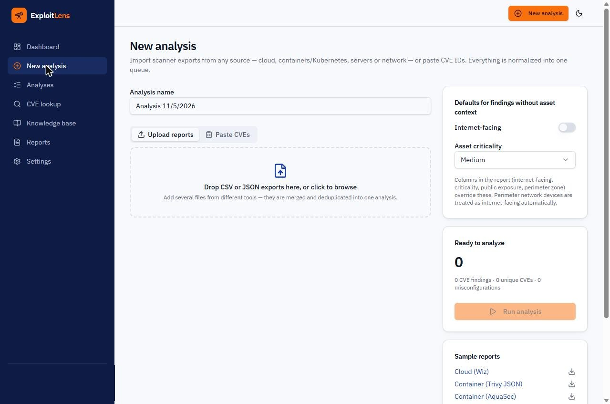

I build AI where it removes repetitive analyst work: deciding which CVEs are really exploitable, turning raw findings into the right message for each audience, and checking whether an organization is ready to roll out AI safely. Each system keeps a human in control and every output traceable to a source.
A web app that imports vulnerability reports from cloud, container/Kubernetes, server and network scanners, checks every CVE against live threat intelligence, and tells the team what is actually exploitable, what to fix first, and how.
Vulnerability teams drown in CVSS scores. Every scanner (Qualys, Tenable, Wiz, AquaSec, Trivy, Kubescape) exports a different format, so findings live in separate silos and the same CVE shows up several times. A CVSS 9.8 that nobody exploits gets the same urgency as a CVSS 7.5 that ransomware crews use every day. Owners get long, unprioritized lists and push back.




Screenshots use the app's built-in synthetic demo data. No client data is shown.
Illustrative model for this portfolio. The production app uses live NVD, CISA KEV and EPSS data and a richer rule set.
An organization-facing agent built in Microsoft Copilot Studio that walks IT, security and compliance leaders through a Microsoft 365 Copilot readiness check, scores them, and maps the gaps to NIST 800-53 and the NIST AI RMF.
Microsoft 365 Copilot can surface any file a user can already open. Organizations that switch it on without fixing oversharing, weak identity controls, missing labels and audit gaps turn years of permission drift into an instant data-exposure problem. Leaders need a fast, plain-language way to know whether they're ready and what to fix first.
Seven reusable prompt templates that turn raw vulnerability data into communication people act on: engineer tickets, asset-owner notices, escalations, triage narratives, executive scorecards and stand-up prep.
Most remediation delays aren't technical; they're communication. The same CVE has to be explained differently to an engineer, an application owner, a director and an auditor, and analysts spend hours rewriting the same facts. Free-form AI chat makes it worse: inconsistent tone and invented details.
Sample outputs use synthetic asset names and dates.
The same control discipline I apply to vulnerability management, applied to AI systems, and the lens I bring to any organization rolling out Copilot or AI agents.
Fix permissions, labels and DLP before an AI assistant can index them. Agents get only the sources their job needs.
Answers come from named, approved sources, and the "why" is shown so humans can verify before acting.
AI drafts, ranks and recommends. People approve risk acceptance, exceptions and system changes.
Unified audit logging, retention, and a named owner for AI risk and use policy.
Build and test agents in isolated environments; promote to production deliberately.
Credits and capacity assigned per environment, monitored, with limits set before scaling.
Vulnerability management, attack surface management and GRC, with practical, governed AI built in.